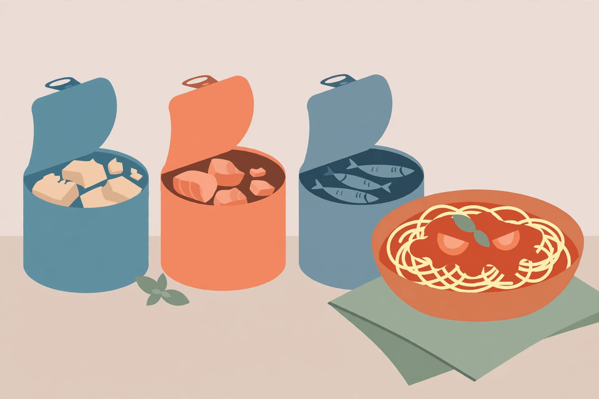

Canned fish meals beyond sandwiches

A can of tuna in most kitchens has exactly one destiny: mixed with mayonnaise, spread on bread, forgotten until the next can. That is a waste of the most dinner-ready protein on the shelf. Canned fish — tuna, salmon, and sardines — is already cooked, needs no thawing, and can carry a pasta sauce, a crisped patty, a rice skillet, or a no-cook plate. Roundups of canned tuna dinners, such as the 17-recipe list published by EatSCV, show the same spread: skillet casseroles, spicy rice skillets, bean salads, melts, and grain bowls from the same basic can. This guide organizes those possibilities by format rather than by recipe name, adds the one health topic canned tuna honestly requires — mercury, and how the type of tuna changes it — and gives the drain-or-keep decision that quietly shapes every format.
First, the mercury math that picks the can
Not all canned tuna is the same fish. Tasting Table's summary of FDA guidance puts the key fact plainly: canned albacore (white) tuna contains about three times the mercury of canned light tuna, which comes primarily from skipjack. On that basis, the FDA figures cited there allow adults typically two to three 4-ounce servings of light tuna a week, but only one 4-ounce serving of albacore a week — and those amounts count toward total fish for the week, not tuna alone. Children and people who are pregnant are advised to be more cautious still, favouring canned light tuna. The practical cupboard rule follows directly: stock light tuna as the everyday can, treat albacore as the occasional one, and let salmon and sardines share the rotation so no single fish carries every week. This is general information drawn from published FDA guidance, not personal medical advice; anyone with specific health concerns should follow their clinician's advice.
The canned fish shelf, compared
| Can | Flavour and texture | Best formats here | Frequency note |
|---|---|---|---|
| Light tuna (skipjack) | Mild, flakes small | Pasta, rice skillet, no-cook plate | Everyday can: 2–3 servings a week per FDA figures cited |
| Albacore (white) tuna | Firmer, steak-like flakes | Bowls and plates where the fish stays distinct | Occasional can: 1 serving a week per FDA figures cited |
| Canned salmon | Richer, softer | Patties, pasta, bowls | Rotation can alongside tuna |
| Sardines | Strongest flavour, soft bones | Toast plates, pasta, rice | Rotation can; start small if new to them |
The drain decision, made on purpose
Every canned fish recipe quietly answers one question: what happens to the packing liquid? The canned fish guidance at MyFamilyPlates states the working rule well — fish packed in oil or broth usually needs no rinsing, because that liquid carries flavour into sauces and grains, while a quick rinse can tone down salted-water-packed fish when sodium is a concern; for sandwiches and casseroles the common practice is to drain but not rinse. Translated into a decision: keep oil-packed tuna's oil for pasta and rice, where it becomes the sauce base; drain water-packed fish for patties, where extra liquid loosens the mix; and rinse only when a dish is delicate enough that the canning liquid would bully it. Deciding on purpose, instead of automatically tipping every can into the sink, is the difference between fish that seasons a dish and fish that merely sits in it.
Format 1: pantry pasta with canned fish
The method described by Healthrine's canned fish guide is the backbone: while pasta boils, olive oil, sliced garlic, and chili flakes warm in a pan, a can of crushed tomatoes joins them and simmers for about ten minutes, and oil-packed tuna — plus capers and olives when the shelf holds them — is stirred in at the end before everything is tossed with the drained pasta. Sardines broken up with a fork work in the same sauce for a deeper, more savoury result. The fish needs no cooking of its own; it only needs to warm through in a sauce that was built to receive it.
- Start pasta in well-salted water and keep a mug of the cooking water.
- Warm olive oil — including the oil from the tuna can, if oil-packed — with garlic and chili flakes for about a minute.
- Add crushed tomatoes, season, and simmer about 10 minutes until the sauce looks glossy.
- Flake in the fish off the heat, with capers or olives if using. Warm for a minute only.
- Toss with drained pasta and a splash of pasta water until the sauce coats rather than pools.
What success looks like: every strand is coated, the fish is in flakes throughout rather than one lump, and the sauce tastes of tomato and fish together — not tomato with fish on top.
Format 2: crisped salmon or tuna patties
Patties are the format that turns canned fish into something that feels cooked rather than assembled. Healthrine's version mixes a drained can of salmon with an egg, a handful of breadcrumbs or crushed crackers, chopped green onion, and a spoonful of mustard, shapes four patties, and pan-fries them until golden on both sides. The cupboard translation is direct: cracker crumbs replace fresh breadcrumbs, dried onion and garlic powder replace the green onion, and the egg is the one fresh ingredient the format genuinely needs. Serve on bread if it exists, over rice if it does not, with any sharp sauce the shelf can offer — mustard thinned with vinegar and a pinch of sugar does the job.
- Drain the fish well and flake it into a bowl, picking out any large bones or skin if that is a preference.
- Mix in one beaten egg, crumbs, mustard, and seasonings until the mixture just holds together when squeezed.
- Shape into patties and rest them for five minutes so the crumbs hydrate — this is what keeps them from falling apart.
- Fry in a thin film of oil over medium heat until deeply golden on the first side before turning once.
What success looks like: a crisp crust that survives the turn, a centre that is hot and moist, and a patty that can be lifted whole rather than rescued in pieces.
Format 3: the spicy tuna rice skillet
EatSCV's roundup includes a spicy tuna skillet — garlic and chili fried first, tuna and soy sauce added, everything tossed with steamed rice — and it is the fastest hot dinner in this guide. Cooked rice (fresh or properly chilled leftovers) goes into the pan after the aromatics, the drained tuna folds through with soy sauce and chili flakes or hot sauce, and the whole dish is ready when the rice is hot and the edges catch a little colour. A can of peas or sweetcorn from the shelf makes it a complete pan. Because this format leans on light tuna's mildness, it is also the easiest place to start sardines: half a tin, broken small, disappears into the seasoning while doubling the savoury depth.
Format 4: the no-cook fish and bean plate
The same roundup lists a tuna and white bean salad — tuna combined with white beans, parsley, lemon, and olive oil as a protein-packed, no-cook meal — and the plate format generalizes it. Drained fish and a drained, rinsed can of white beans or chickpeas are tossed with olive oil, vinegar or lemon juice, salt, dried herbs, and anything crunchy the cupboard holds: diced onion, jarred peppers, crushed crackers over the top at the end. Ten minutes of resting while the rest of the table is set lets the beans take on the dressing. On the hottest or latest nights, this is a composed dinner, not a compromise.
Storage notes for opened cans
An opened can of fish is perishable food, whatever the unopened tin's shelf life suggests. FoodSafety.gov's leftover guidance is to refrigerate perishable leftovers within two hours, use them within about three to four days, and reheat cooked leftovers to 165°F (74°C). Move leftover fish out of the opened can into a covered container in the fridge, and treat leftover patties and pasta the same way. When storage is in doubt, discard rather than taste-test.
FAQ
Is canned fish already cooked? Yes — like canned beans, canned fish is cooked in the sealed can, which is why every format here only warms it through. Long extra cooking dries it out and dulls it.
Which can should a household stock most of? Light tuna, on the FDA figures above: it carries about a third of albacore's mercury, flakes into every format, and leaves room in the week for salmon and sardines alongside it.
Do sardine bones need removing? No. They are soft from canning and are eaten as part of the fish; in patties and pasta they break down entirely. Anyone who prefers them removed can lift out the larger ones, but it is preference, not safety.
Health note: mercury guidance above summarizes published FDA figures via Tasting Table, accessed 2026-10-16. It is general information, not medical advice.